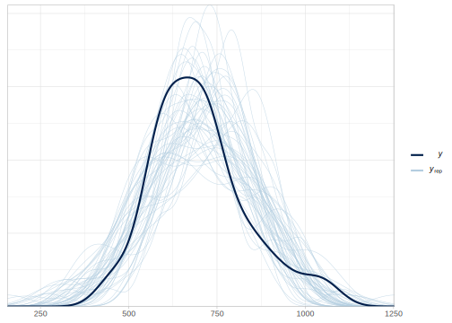
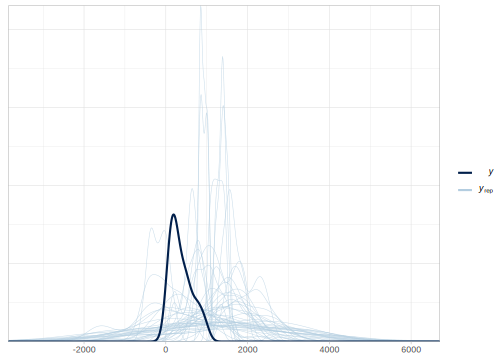
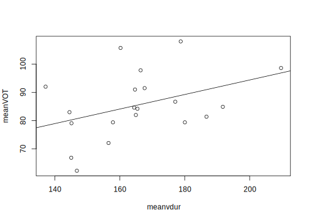
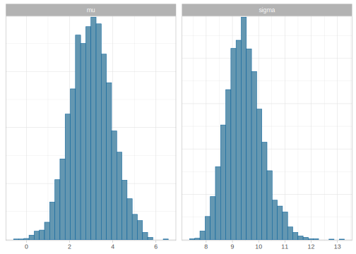
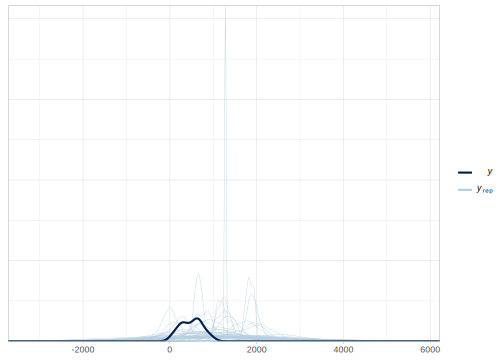

11.4 Regression models in Stan
In the following sections, we will revisit and expand on some of the examples that we fit with brms in chapter 4.
11.4.1 A first linear regression in Stan: Does attentional load affect pupil size?
As in section 4.1, we focus on the effect of cognitive load on one participant’s pupil size with a subset of the data of Wahn et al. (2016). We use the following likelihood and priors. For details about our decision on priors and likelihood, see 4.1.
\[\begin{equation} \begin{aligned} p\_size_n &\sim Normal(\alpha + c\_load_n \cdot \beta,\sigma) \\ \alpha &\sim Normal(1000, 500) \\ \beta &\sim Normal(0, 100) \\ \sigma &\sim Normal_+(0, 1000) \end{aligned} \end{equation}\]
Save the Stan model as stan_models/pupil_model.stan.
data {
int<lower=1> N;
vector[N] p_size;
vector[N] c_load;
}
parameters {
real alpha;
real beta;
real<lower = 0> sigma;
}
model {
// priors:
target += normal_lpdf(alpha | 1000, 500);
target += normal_lpdf(beta | 0, 100);
target += normal_lpdf(sigma | 0, 1000)
- normal_lccdf(0 | 0, 1000);
// likelihood
target += normal_lpdf(p_size | alpha + c_load * beta, sigma);
}Because we are fitting a regression, we use the location (\(\mu\)) of the likelihood function to regress p_size with the following equation alpha + c_load * beta, where both p_size and c_load are vectors defined in the data block. The following line accumulates the log-likelihood of every observation:
target += normal_lpdf(p_size | alpha + c_load * beta, sigma);
This is equivalent to and slightly faster than the following lines:
for(n in 1:N)
target += normal_lpdf(p_size[n] | alpha + c_load[n] * beta, sigma);A statement that requires some explanation is the following:
target += normal_lpdf(sigma | 0, 1000)
- normal_lccdf(0 | 0, 1000);As in our original example in 4.1, we are assuming a truncated normal distribution as a prior for \(\sigma\). Notice that not only we are setting a lower boundary to the parameter with lower = 0, but that we are also “correcting” its prior distribution by subtracting normal_lccdf(0 | 0, 1000). Once we add a lower boundary, the probability mass under half of the “regular” normal distribution should be one, that is, when we integrate from zero (rather than from minus infinity) to infinity. As we saw in Box 4.1, we need to normalize the PDF by dividing it by the difference of its CDF evaluated in the new boundaries (\(a = 0\) and \(b = - \infty\) in our case):
\[\begin{equation} f_{[a,b]}(x) = \frac{f(x)}{F(b) - F(a)} \tag{4.1} \end{equation}\]
This equation in log-space is:
\[\begin{equation} log(f_{[a,b]}(x)) = log(f(x)) - log(F(b) - F(a)) \tag{4.1} \end{equation}\]
In Stan \(\log(f(x))\) corresponds to normal_lpdf(x |...), and log(F(x)) to normal_lcdf(x|...). Because in our example \(b=\infty\), \(F(b) = 1\), we are dealing with the complement of the log CDF evaluated at \(a =0\), \(\log(1 - F(0))\), that is why we use normal_lccdf(0 | ...).
To be able to fit the model, Stan requires the data to be input as a list: First, we load the data and center the dependent variable in a data frame and then we create a list.
df_pupil_data <- read_csv("data/pupil.csv")
df_pupil_data <- df_pupil_data %>%
mutate(c_load = load - mean(load))ls_pupil_data <- list(p_size = df_pupil_data$p_size,
c_load = df_pupil_data$c_load,
N = nrow(df_pupil_data))
fit_pupil <- stan(file = 'stan_models/pupil_model.stan',
data = ls_pupil_data)Check the traceplots:

Examine some summaries and plots of the marginal posterior distributions of the parameters of interest:
## mean 2.5% 97.5% n_eff Rhat
## alpha 701.3 660.3 743.7 3207 1
## beta 34.1 10.6 58.8 3481 1
## sigma 128.5 103.1 162.4 3485 1
If we want to determine how likely it is that the pupil size increased rather than decreased, we can examine the proportion of samples above zero.
## [1] 0.997If we want to generate prior or posterior predictive distributions, we can either create our own functions in R with map_dfr (or a for-loop) as we did in section 4.2 with the function lognormal_model_pred(). Alternatively, we can use the generated quantities block in our model:
data {
int<lower = 1> N;
vector[N] c_load;
int<lower= 0, upper = 1> onlyprior;
vector[N] p_size;
}
parameters {
real alpha;
real beta;
real<lower = 0> sigma;
}
model {
// priors including all constants
target += normal_lpdf(alpha | 1000, 500);
target += normal_lpdf(beta | 0, 100);
target += normal_lpdf(sigma | 0, 1000)
- normal_lccdf(0 | 0, 1000);
if (!onlyprior)
target += normal_lpdf(p_size | alpha + c_load * beta, sigma);
}
generated quantities {
real p_size_pred[N];
p_size_pred = normal_rng(alpha + c_load * beta, sigma);
}For most of the probability functions, there is a matching pseudorandom number generator (PRNG) with the suffix _rng. Here we are using the vectorized function normal_rng. At the moment not all the PRNG are vectorized, but the ones that are, only allow for arrays and, confusingly enough, not vectors. We define arrays by indicating a types, and then between brackets, the length of each dimension. For example to define an array of real numbers with three dimension of length 6, 7, and 10 we write real var[6, 7, 10]. Vectors and matrices are also valid types for an array. See Box 11.2 for more about the difference between arrays and vectors, and other algebra types. Notice that we also included a data variable called onlyprior, this is an integer that can only be set to 1 (TRUE) or 0 (FALSE). When onlyprior = 1, the likelihood is omitted from the model, p_size is ignored, and p_size_pred is the prior predictive distribution. When onlyprior = 0, the likelihood is incorporated in the model (as it is in the original code pupil_model.stan) using p_size, and p_size_pred is the posterior predictive distribution.
If we want posterior predictive distributions, fit the model to the data and set onlyprior = 0, if we want prior predictive distributions, we sample from the priors and set onlyprior = 0. Then we use bayesplot functions to visualize predictive checks.
For posterior predictive checks, we would do the following:
ls_pupil_data <- list(onlyprior = 0,
p_size = df_pupil_data$p_size,
c_load = df_pupil_data$c_load,
N = nrow(df_pupil_data))
fit_pupil <- stan(file = 'stan_models/pupil_gen.stan',
data = ls_pupil_data)Store the predicted pupil sizes in yrep_pupil. This variable contains an \(N_{samples} \times N_{observations}\) matrix, that is, each row of the matrix is a draw from the posterior predictive distribution, i.e., a vector with one element for each of the data points in y.
## [1] 4000 41Predictive checks functions in bayesplot (starting with ppc_) require a vector with the observations in the first argument and a matrix with the predictive distribution as its second argument. Here for example, we use an overlay of densities and we draw only 50 elements (that is 50 predicted datasets).

For prior predictive distributions, we simply set onlyprior = 1. Notice that the observations (p_size) are ignored by the model, but required by the data block in Stan. If we haven’t collected data yet, we could include a vector of zeros.
ls_pupil_prior <- list(onlyprior = TRUE,
p_size = df_pupil_data$p_size,
# or p_size = rep(0, nrow(df_pupil_data)),
c_load = df_pupil_data$c_load,
N = nrow(df_pupil_data))
prior_pupil <- stan(file = 'stan_models/pupil_gen.stan',
data = ls_pupil_prior)We can safely ignore the warnings of the last model since we are not fitting the data. Predictive checks in bayesplot require (at least for now), an argument y with data. If we haven’t collected data yet, we can, for example, use it to provide plausible or implausible values that we want to compare to the prior predictive realizations. In the following example, we set y to be a uniform distribution that ranges between 0 and 1000; this is the distribution density drawn with the darker color in the plot. (Alternatively, we can use ggplot and manually build the plot.)
yrep_prior_pupil <- extract(prior_pupil)$p_size_pred
ppc_dens_overlay(runif(ls_pupil_prior$N, 0,1000),
yrep_prior_pupil[1:50, ])
Stan contains three basic linear algebra types, vector, row_vector, and matrix. But Stan also allows for building arrays of any dimension from any type of element (integer, real, etc). This means that there are several ways to define one-dimensional N-sized containers of real numbers,
real a[N];
vector[N] a;
row_vector[N] a;as well as, two-dimensional N1\(\times\)N2-sized containers of real numbers:
real m[N1, N2];
matrix[N1, N2] m;
vector[N2] b[N1];
row_vector[N2] b[N1];These distinctions affect either what we can do with these variables, or the speed of our model, and sometimes are interchangeable. Matrix algebra is only defined for (row) vectors and matrices, that is we cannot multiply arrays. The following line requires all the one-dimensional containers (p_size and c_load) to be defined as vectors (or row_vectors):
vector[N] mu = alpha + c_load * beta;Notice, however, that many “vectorized” operation are also valid for arrays, that is, normal_lpdf, accepts (row) vectors (as we did in our code) or arrays as in the next example. There is of course no point in converting a vector to an array as follows, but this shows that Stan allows both type of one-dimensional containers.
real mu[N]= to_array_1d(alpha + c_load * beta);
target += normal_lpdf(p_size | mu, sigma);By contrast, the outcome of “vectorized” pseudorandom number generator (_rng) functions can only be stored in an array. The following example shows the only way to vectorize this type of function:
real p_size_pred[N] = normal_rng(alpha + c_load * beta, sigma);Alternatively, one can always use a for-loop, and it won’t matter if p_size_pred is an array or a vector:
vector[N] p_size_pred;
for(n in 1:N)
p_size_pred[n] = normal_rng(alpha + c_load[n] * beta, sigma);See also Stan’s manual section on matrices, vector, and arrays: https://mc-stan.org/docs/2_23/stan-users-guide/matrices-vectors-and-arrays.html
11.4.2 Interactions in Stan: Does attentional load interact with trial number affecting pupil size?
We’ll expand the previous model to also include the effect of (centered) trial and its interaction with cognitive load on one participant’s pupil size. Our new likelihood will look as follows:
\[\begin{equation} p\_size_n \sim Normal(\alpha + c\_load_n \cdot \beta_1 + c\_trial \cdot \beta_2 + c\_load \cdot c\_trial \cdot \beta_3, \sigma) \end{equation}\]
Define priors for all the new \(\beta\)s. Since we don’t have more information about the new predictors, they are sampled from identical prior distributions:
\[\begin{equation} \begin{aligned} \alpha &\sim Normal(1000, 500) \\ \beta_1 &\sim Normal(0, 100) \\ \beta_2 &\sim Normal(0, 100) \\ \beta_3 &\sim Normal(0, 100) \\ \sigma &\sim Normal_+(0, 1000) \end{aligned} \end{equation}\]
The following Stan model is the direct translation of the new priors and likelihood.
data {
int<lower = 1> N;
vector[N] c_load;
vector[N] c_trial;
vector[N] p_size;
}
parameters {
real alpha;
real beta1;
real beta2;
real beta3;
real<lower = 0> sigma;
}
model {
// priors including all constants
target += normal_lpdf(alpha | 1000, 500);
target += normal_lpdf(beta1 | 0, 100);
target += normal_lpdf(beta2 | 0, 100);
target += normal_lpdf(beta3 | 0, 100);
target += normal_lpdf(sigma | 0, 1000)
- normal_lccdf(0 | 0, 1000);
target += normal_lpdf(p_size | alpha + c_load * beta1 + c_trial * beta2 +
c_load .* c_trial * beta3, sigma);
}
When there are matrices or vectors involved, * indicates matrix multiplication whereas .* indicates element-wise multiplication; in R %*% indicates matrix multiplication whereas * indicates element-wise multiplication.
There is, however, an alternative notation that can simplify our code. In the following likelihood, \(p\_size\) is a vector of N observations (in this case 41), \(X\) is the model matrix with a dimension of \(N \times N_{pred}\) (in this case \(41 \times 3\)), and \(\beta\) a vector of \(N_{pred}\) (in this case, 3) rows. Assuming that \(\beta\) is a vector, we indicate with one line that the each beta is sampled from identical prior distributions.
\[\begin{equation} \begin{aligned} p\_size &\sim Normal(\alpha + X \cdot \beta,\sigma)\\ \beta &\sim Normal(0, 100) \\ \sigma &\sim Normal_+(0, 1000) \end{aligned} \end{equation}\]
The translation into Stan code is the following:
data {
int<lower = 1> N;
int<lower = 0> K; // number of predictors
matrix[N, K] X; // model matrix
vector[N] p_size;
}
parameters {
real alpha;
vector[K] beta;
real<lower = 0> sigma;
}
model {
// priors including all constants
target += normal_lpdf(alpha | 1000, 500);
target += normal_lpdf(beta | 0, 100);
target += normal_lpdf(sigma | 0, 1000)
- normal_lccdf(0 | 0, 1000);
target += normal_lpdf(p_size | alpha + X * beta, sigma);
}For some likelihood functions, Stan provides a more efficient implementation of the linear regression than the manually written in the previous code. This is achieved using _glm functions. In this case, we can replace the last line with the following statement (notice the order of the arguments).27
target += normal_id_glm_lpdf( p_size | X, alpha, beta, sigma);Save this model as stan_models/pupil_int.stan and prepare the data as follows: First create a centered version of trial, c_trial, then use the function model.matrix to create the X matrix that contains in each column our predictors and omits the intercept with 0 +.
df_pupil_data <- df_pupil_data %>%
mutate(c_trial = trial - mean(trial))
X <- model.matrix(~ 0 + c_load * c_trial, df_pupil_data)
ls_pupil_dataX <- list(p_size = df_pupil_data$p_size,
X = X,
K = ncol(X),
N = nrow(df_pupil_data))## mean 2.5% 97.5% n_eff Rhat
## alpha 699.58 666.54 732.60 3985 1
## beta[1] 31.05 11.80 50.31 4874 1
## beta[2] -5.83 -8.58 -3.07 4754 1
## beta[3] -1.84 -3.43 -0.24 3988 1
## sigma 104.83 83.40 135.23 3481 1Plot here the 95% CrI of the parameters of interests. Notice that we use regex_pars, rather than pars, because we want to capture beta[1], beta[2], and beta[3]; regex_pars use regular expressions to select the parameters (for information about regular expressions in R see https://stat.ethz.ch/R-manual/R-devel/library/base/html/regex.html)
df_fit_pupil_int <- as.data.frame(fit_pupil_int)
mcmc_intervals(fit_pupil_int,
regex_pars = c("beta"),
prob_outer = .95,
prob = .8,
point_est = "mean")
11.4.3 Logistic regression in Stan: Does set size and trial affect free recall?
We revisit and expand on the analysis presented in 4.3 of a subset of the data of Oberauer (2019). In this example, we will investigate whether the length of a list and trial number affect the probability of correctly recalling a word.
As in section 4.3, we assume a Bernoulli likelihood with a logit link function, and the following priors (recall that the logistic function is the inverse of the logit).
\[\begin{equation} \begin{aligned} correct_n &\sim Bernoulli( logistic(\alpha + X \cdot \beta))\\ \alpha &\sim Normal(0, 1.5) \\ \beta &\sim Normal(0, 0.1) \end{aligned} \end{equation}\]
Where \(\beta\) is a vector of size \(K = 2\), \(\{\beta_0, \beta_1\}\). Below we present the most efficient way to code this in Stan; save it as stan_models/recall.stan.
data {
int<lower = 1> N;
int<lower=0> K; // number of predictors
matrix[N, K] X; // model matrix
int correct[N];
}
parameters {
real alpha;
vector[K] beta;
}
model {
// priors including all constants
target += normal_lpdf(alpha | 0, 1.5);
target += normal_lpdf(beta | 0, .1);
target += bernoulli_logit_glm_lpmf(correct | X, alpha, beta);
}Notice that the dependent variable, correct, is an array of integers rather than a vector; this is because vectors are always composed of real numbers, but the Bernoulli likelihood only accepts the integers 1 or 0. As in the previous example, we are taking advantage of the _glm functions. A less efficient but more transparent option would be to replace the last statement with:
target += bernoulli_logit_lpmf(correct | alpha + X * beta);We might want to use bernoulli_logit_lpmf if we want to define a non-linear relationship between the predictors that are outside the generalized linear model framework. One example would be the following:
target += bernoulli_logit_lpmf(correct| alpha + exp(X * beta));Another more flexible possibility when we want to indicate a Bernoulli likelihood is to use bernoulli_lpmf and add the link manually. The last statement of stan_models/recall.stan would become the following:
target += bernoulli_lpmf(correct| inv_logit(alpha + X * beta));The function bernoulli_lpmf can be useful if one wants to try other link functions; see exercise 11.4.
Finally, the most transparent form (but less efficient) would be the following for-loop:
for (n in 1:N)
target += bernoulli_lpmf(correct[n] | inv_logit(alpha + X[n] * beta));To fit the model as stan_models/recall.stan, prepare the data as follows:
df_recall_data <- read_csv("./data/PairsRSS1_all.csv") %>%
mutate(correct = if_else(response_category ==1, 1, 0)) %>%
filter(response_size_list + response_size_new_words == 0) %>%
filter(subject == 10) %>%
mutate(c_set_size = set_size - mean(set_size),
c_trial = trial - mean(trial)) %>%
select(subject, set_size, c_set_size, correct,
trial, session, block, tested)As in section 11.4.2, we exclude the intercept from the matrix X using 0 +.... This is because the Stan code that we are using already takes into account that it’s going to be a vector of ones.
df_recall_data <- df_recall_data %>%
mutate(c_trial = trial - mean(trial))
X <- model.matrix(~ 0 + c_set_size * c_trial, df_recall_data)
ls_recall_data <- list(correct = df_recall_data$correct,
X = X,
K = ncol(X),
N = nrow(df_recall_data))## Error in open.connection(con, open = mode) :
## Timeout was reached: [github-production-release-asset-2e65be.s3.amazonaws.com] Connection timed out after 10914 millisecondsAfter fitting the model we can print and plot summaries of the posterior distribution.
## mean 2.5% 97.5% n_eff Rhat
## alpha 1.99 1.41 2.66 3644 1
## beta[1] -0.19 -0.35 -0.02 3849 1
## beta[2] -0.02 -0.09 0.05 3690 1
## beta[3] 0.00 -0.03 0.04 3643 1We plot here the the 95% CrI of the parameters of interests.
df_fit_recall <- as.data.frame(fit_recall)
mcmc_intervals(df_fit_recall,
regex_pars = "beta",
prob_outer = .95,
prob = .8,
point_est = "mean")
As we did in 4.3.4, we might want to communicate the posterior in proportions rather than in log-odds (as seen in the parameters beta). We can do this in R manipulating the dataframe df_fit_recall, or extracting the samples with extract(fit_recall). Another alternative presented here is by using the generated quantities block. To make the code more compact we declare the type of each variable and store its content in the same line.
generated quantities {
real average_accuracy = inv_logit(alpha);
vector[K] change_acc = inv_logit(alpha) - inv_logit(alpha - beta);
}Recall that due to the non-linearity of the scale, the effects depends on the average accuracy, and the set size and trial that we start from (in this case we are examining the change of one unit from the average set size and the average trial).
Save the Stan code as stan_models/recall_prop.stan.
The following plot now shows how the average accuracy deteriorates when the participant is exposed to a set size larger than the average by one, a trial further than the middle one, and the interaction of both.
df_fit_recall <- as.data.frame(fit_recall) %>%
rename(set_size = `change_acc[1]`,
trial = `change_acc[2]`,
interaction = `change_acc[3]`)
mcmc_intervals(df_fit_recall,
pars = c("set_size", "trial", "interaction"),
prob_outer = .95,
prob = .8,
point_est = "mean") +
xlab("Change in accuracy")
The previous plot is showing us that our model is estimating that by increasing the set size by one unit, the recall accuracy of the single participant is deteriorated by 2%. In contrast, there is hardly any trial effect or interaction between trial and set size.
References
Oberauer, Klaus. 2019. “Working Memory Capacity Limits Memory for Bindings.” Journal of Cognition 2 (1): 40. https://doi.org/10.5334/joc.86.
Wahn, Basil, Daniel P. Ferris, W. David Hairston, and Peter König. 2016. “Pupil Sizes Scale with Attentional Load and Task Experience in a Multiple Object Tracking Task.” PLOS ONE 11 (12): e0168087. https://doi.org/10.1371/journal.pone.0168087.
An extra boost in efficiency can be obtained in regular regressions where
XandYare data (rather than parameters as in cases of missing data or measurement error), since this function can be executed on a GPU.↩